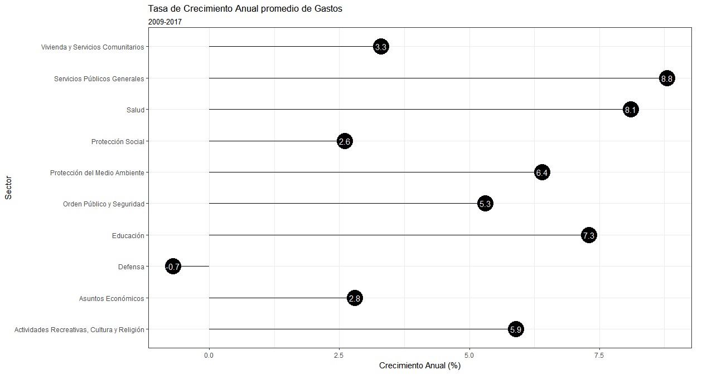
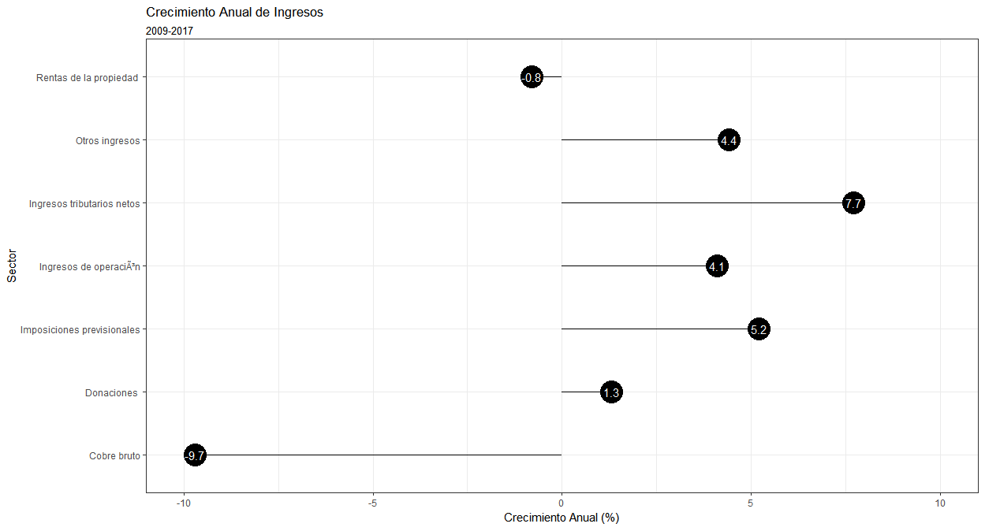

Desde 2009, el Gasto Fiscal ha crecido progresivamente.
Más acerca de este gráfico.Realizado a partir del gasto neto agregado a nivel anual de las instituciones públicas. Todo en moneda 2017.
Desde 2009 hasta 2017, el presupuesto ha crecido a una tasa anual compuesta de 6.1%. ¿Qué ítemes de gasto han crecido más?

Más acerca de este gráfico.Realizado a partir del gasto neto agregado a nivel anual de las instituciones públicas. Todo en moneda 2017.
En los últimos ocho años, en términos absolutos el fisco ha aumentado más la inversión en Servicios Públicos Generales, Salud y Educación. Si en 2009 el fisco gastaba 5.1 billones Un billón es un millón de millones de pesos de pesos al año en Educación, en 2017 este monto ascendía a 9.3 billones. ¡Casi el doble!
Espera un segundo, ¿cómo es que a pesar que el gasto ha crecicido sostenidamente aún no nos hemos desfinanciado? ¿Qué ha pasado con el Producto Interno Bruto?
El Producto Interno Bruto o PIB es el valor de los bienes y servicios producidos en Chile en un año. En palabras simples, es una medida de la riqueza existente en el país. En Chile, el PIB ha crecido en una tasa anual compuestaEl crecimiento compuesto lo puedes pensar como el valor que necesita crecer todos los años para pasar de un valor inicial a un valor final en una cantidad de tiempo determinada. de 3.3%. En 2017 llegó hasta los 180 billones de pesos.
Más acerca de este gráfico.Realizado a partir de datos del Fondo Monetario Internacional y Banco Mundia. Todo en moneda 2017.
¿Cómo el fisco ha sido capaz de aumentar el gasto el 6.1% anual si el PIB ha solo aumentado en 3.3%? La respuesta es sencilla: aumentando el financiamiento vía impuesto y la deuda.
Más acerca de este gráfico.Realizado a partir de datos filtrados por ingresos a Tesoro Público. No incluye ingreso a otras agencias. Todo en moneda 2017.
A pesar que el PIB solo ha crecido un 3.3% anual desde 2009, los ingresos han aumentado en 4.5%. Cabe recordar que en el periodo han habido 2 reformas tributarias, la primera en 2012 y la segunda en 2015.

Más acerca de este gráfico.Realizado a partir de datos filtrados por ingresos a Tesoro Público. No incluye ingreso a otras agencias. Todo en moneda 2017.
En términos relativos, el sector que más ha crecido como fuente de financiamiento es el Venta o Rescate de Títulos y Valores, en otras palabras, es la liquidación de activos que tiene el fisco. Por otro lado, términos absolutos vale echarle una segunda mirada al IVA, Impuesto a la Renta y Endeudamiento que sumados crecieron de 26.2 a 35.4 billones.
Dentro de estos tres ítemes, la deuda fue el que más creció, de 1.9 billones en 2009 a 6.4 billones en 2017. ¡Un aumento de más de tres veces!